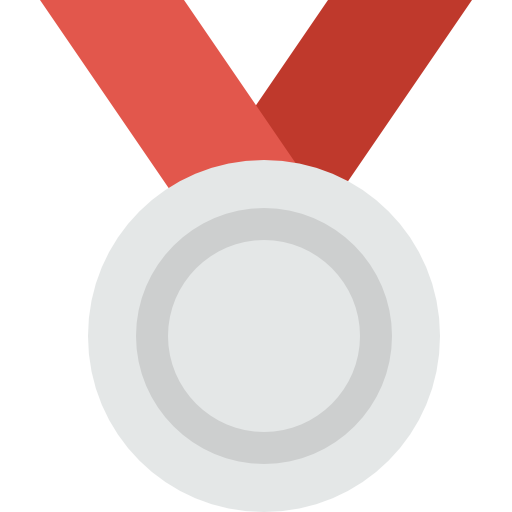
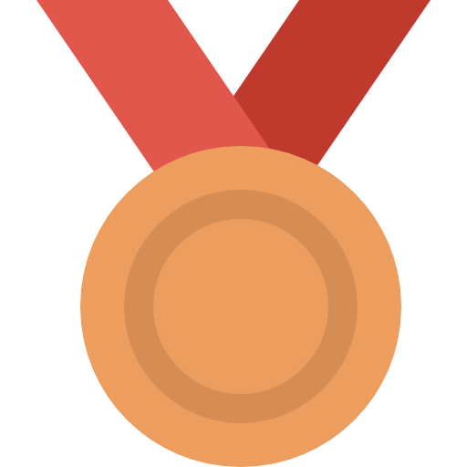
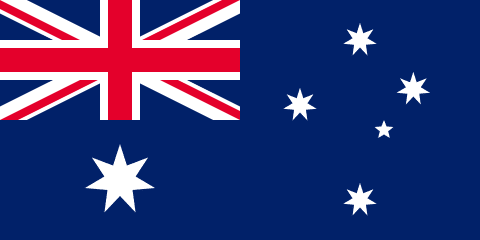
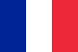
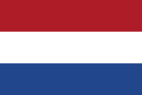
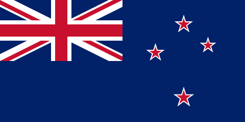
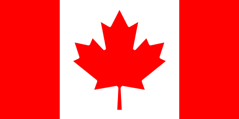
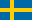
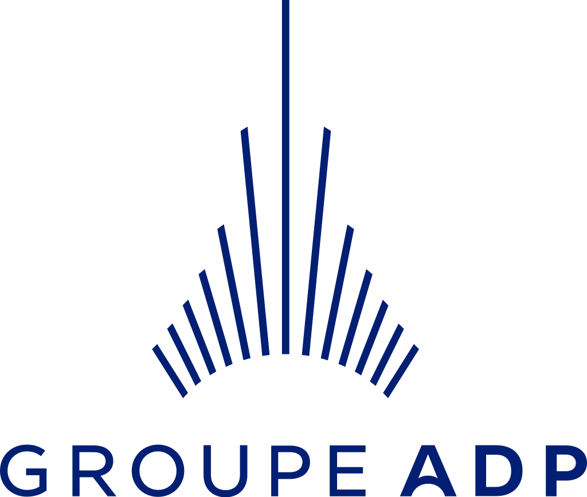
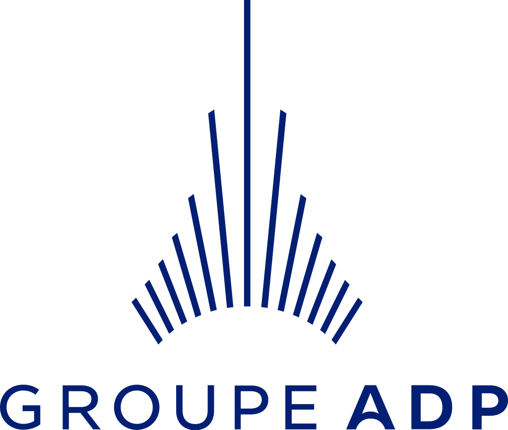

Léon Nageant
4 fois médaillé or, le nageur français casse tout les records sur ces jeux.

Les Jeux Olympiques d'été de 2024 se dérouleront à Paris, du 26 juillet au 11 août. Cet événement mondial rassemblera plus de 10 000 athlètes de plus de 200 pays pour concourir dans 32 disciplines sportives. Paris, capitale de l'innovation et de la culture, accueillera une édition qui mettra en avant la durabilité, l'inclusion et l'engagement en faveur de l'environnement. C'est l'occasion de vivre des moments inoubliables de sport, de fraternité et de passion.
> Plus d'informationsLes Jeux Paralympiques de 2024 se tiendront à Paris du 28 août au 8 septembre, réunissant les meilleurs athlètes en situation de handicap du monde entier. Ces jeux célébreront la performance, la résilience et l'esprit de dépassement. Plus de 4 400 athlètes participeront à 22 sports, offrant un spectacle de courage et de détermination. Paris 2024 marquera un tournant dans l’inclusion et l’accessibilité, avec des infrastructures modernes et un engagement fort pour promouvoir l'égalité.
> Plus d'informations4 fois médaillé or, le nageur français casse tout les records sur ces jeux.
Cheung Ka Long remporte de nouveau la médaille d'or d'escrime après l'avoir emporte 4 ans plus tôt.
Catherine Debrunner décroche sa quatrième médaille d'or des jeux.
En plus de remporter une quatrième médaille d'or olympiques, Sydney McLaughlin-Levrone bat de nouveau le record mondial avec un temps de 50 s 37.
| Pays |  |  | |||
|---|---|---|---|---|---|
| États-Unis | 40 | 44 | 42 | 126 | |
| Chine | 40 | 27 | 24 | 91 | |
| Japon | 20 | 12 | 13 | 45 | |
|  | Australie | 17 | 19 | 16 | 52 |
|  | France | 16 | 26 | 22 | 64 |
|  | Pays-Bas | 15 | 7 | 12 | 33 |
| Corée du Sud | 13 | 9 | 10 | 32 | |
 |
Italie | 12 | 13 | 8 | 33 |
| Allemagne | 12 | 13 | 8 | 33 | |
|  | Nouvelle-Zélande | 10 | 7 | 3 | 20 |
|  | Canada | 9 | 7 | 11 | 27 |
| Ouzbékistan | 8 | 2 | 3 | 13 | |
| Hongrie | 6 | 7 | 6 | 19 | |
| Espagne | 5 | 4 | 9 | 18 | |
|  | Suède | 4 | 4 | 3 | 11 |
 
